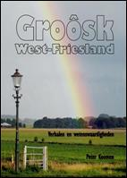
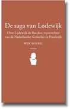

Op 2
 april zal Wido Bourel in Ranst spreken over
de “Nederlanden in Frankrijk” voor de nieuwe Marnixring in
oprichting “Land van Playsantie”.
april zal Wido Bourel in Ranst spreken over
de “Nederlanden in Frankrijk” voor de nieuwe Marnixring in
oprichting “Land van Playsantie”.
> nieuwsbrief
> 33e jg. - 2e trimester 2015
Hernieuwen
ledenbijdrage voor 2015
Het hernieuwen van
de bijdragen voor 2015 verliep tot nog toe uitzonderlijk vlot.
De weinigen die het over het hoofd zagen vinden hierbij
andermaal een betaalformulier. De bijdrage beloopt voor het in
mei te verschijnen nieuwe Jaarboek
De Nederlanden ‘extra muros’ en voor de
driemaandelijkse Nieuwsbrief
Zannekin 29
€. Vanaf 35 € wordt u met dank als steunend lid geboekt.
Maakt u bij
voorkeur gebruik van ons ‘Belgische’ zogenaamd ‘Euro-pees’
rekeningnummer, waarvan de rekeningoverzichten ons dagelijks
meegedeeld worden. Bijliggend betaalformulier kan u daarbij dienstig zijn. Leden genieten bovendien ook
een tastbare vermindering op de deelnamekosten van de Zannekin-activiteiten.
Zannekin-activiteiten
2015
Dit jaar keren we
de volgorde van onze traditionele om: de Ontmoetingsdag
plannen we op zaterdag 30 mei te
Ophain-Bois-Seigneur-Isaac op het domein van Baron Snoy et
d’Oppuers in Waals Brabant (nadere gegevens daaromtrent verder
in deze Nieuwsbrief);
de Studie-uitstap komt er op zaterdag 3 oktober:
vanuit Halle verkennen we dan het oude Henegouwen aan
weerskanten van de ‘Schreve’.
In 2015 plannen we
– in het kader van 1815 en de hereniging van de Nederlanden -
een meerdaagse reis rond koning Willem I. Deze
is gepland van 21 tot en met 25 augustus en zal ons
doorheen de Benelux-landen gidsen naar locaties die herinneren
aan deze vorst. Ook hieromtrent nadere gegevens verderop in deze
Nieuwsbrief.
Groôsk
West-Friesland | Hardcover
verhalen en wetenswaardigheden

Peter Koomen,
ISBN: 9789055124282 Hardcover, 320 p., 19,95 €.
Nederlandstalig
Verschenen:
november 2014
Te bestellen via
de boekhandel.
Aanbevolen!
Praktische gegevens bij de Ontmoetingsdag van 30 mei in Waals Brabant
Samenkomst
om 10.00 uur – Halle – Nmbs-station. Busrit naar Ophain-Bois-Seigneur-Isaac.
10.30 uur: Ontvangst door Baron
Snoy et d’Oppuers. Uiteenzetting en rondleiding door het kasteel
en het kasteeldomein, waarbij de familie doorheen de
geschiedenis van de Nederlanden wordt toegelicht.
Middagmaal (zie hierna).
Lezing door Prof. Dr. emeritus
en voormalig VUB-rector Els Witte over het Orangisme tijdens en na
de hereniging der Nederlanden van 1815 tot 1830.
Daarna busrit en wandeling in en
om de Sint-Geertrui-stiftkerk te Nijvel o.l.v. Jan van Tongeren.
Omstreeks 18.30 uur terug in Halle.
Fomule A:
Busritten + de hele dag in
het kasteeldomein met lezingen, rondleidingen in het domein en
bezoek aan Nijvel alsmede een rijkelijk banket in het kasteel
van de baron: 70,00 € per persoon.
Formule B:
Busritten + de hele dag in
het kasteeldomein met lezingen, rondleidingen in het domein en
bezoek aan Nijvel alsmede een dag-schotel in een Waals-Brabants
spijshuis: 50,00 € per persoon.
Deze dag wordt samen met de Orde
van den Prince Brussel geogani-seerd.
Inschrijven tot en met 24
mei 2015 via het Zannekin-secretariaat,
Paddevijverstraat 2, 8900 Ieper (e-post: maurits.cailliau@skynet.be)
en gelijktijdige
betaling van het verschuldigd bedrag (waaruit de gekozen
formule blijkt) op rekening IBAN BE13 4648 2202 5139 –
BICKREDBEBB t.n.v. Vereniging/Stichting Zannekin, B.8900 Ieper.
Data: 21, 22, 23, 24, 25 augustus 2015 (vijf dagen)
Stramien: Dag een: opstapplaatsen: 09.30 uur: Ukkel
Stalle (Edouard Michielsstraat 51); 10.00 uur: Halle
Station – langs het kanaal Brussel –
Charleroi gegraven ten tijde van koning Willem I.
10.45 uur: vertrek Brussel
Centraal Station, Kardinaal Mercierstraat. In Brussel: rit langs o.a.
het Paleis der Academiën, de standbeelden van Willem van
Oranje, Marnix van Sint-Aldegonde, Brialmont en Cockerill. Rit
naar Antwerpen met stop te
Waarloos (vrij middagmaal). In Antwerpen:
Willemsdok, het monument van de Merode (Berchem) en
Antwerpen Zuid, daar waar de citadel heeft gestaan en het
monument vanwege de tolvrijheid van de Schelde - monument
ter ere van Willem van Oranje en Marnix van Sint-Aldegonde.
Rit naar Den Haag met stop te Zundert. In Den
Haag: rit langs een aantal bezienswaardigheden. 19.00 uur
– Avondmaal en overnachting in Den
Haag.
Dag twee: Den Haag
en Delft: vertrek om 09.00 uur: met tram van lijn
1 (Scheveningen – Delft) naar Delft. In Delft:
- bezoek aan het Prinsenhof, daar waar Willem van Oranje
werd vermoord, en de Nieuwe Kerk met de graven van de
stadhouders en de koningen en koninginnen van Nederland - Vrij
middagmaal. In Den
Haag: bezoek aan het Binnenhof en een wandeling langs de
diverse paleizen van het koninklijkhuis, Lange Voorhout,
Noordeinde, Koninklijke Stallen, Plein 1813-1814 (monument
Willem I) vlak om de hoek is ook nog het Panorama Mesdag,
zeker de moeite waard het is namelijk een zicht op
Scheveningen in de jaren 1880. Vandaar met de bus langs het
Vredespaleis, ontworpen door de Frans-Vlaming Louis
Cordonnier, naar Scheveningen,
langs de plaats waar Willem I uit Engeland per boot landde
(ook een monument). 19.00 uur – Vrij avondmaal
en overnachting in Den Haag.
Dag drie: vertrek om 08.00 uur – van Den
Haag naar Amsterdam. In Amsterdam: het
Paleis op de Dam en de Nieuwe Kerk (waar Willem I werd
ingehuldigd), de Nederlandse Bank opgericht door Willem I. Vrij
middagmaal. Van Amsterdam naar Apeldoorn:
Langs een stukje Noord-Hollands kanaal (op verzoek van Willem
I aangelegd) - via dijk Enkhuizen-Lelystad naar het Loo
Apeldoorn - Uniek bezoek aan Paleis Het Loo te Apeldoorn. Via
Amersfoort met zijn monument
ter ere van de Belgen en Austerlitz met zijn piramide terug naar
Den Haag: 19.30 uur – Vrij
avondmaal en overnachting.
Dag vier: vertrek
om 08.30 uur. Van Den Haag naar Ginneken/Breda
of Nederweert met korte stop aldaar. Langs een stukje
Zuid-Willemsvaart naar Vaals
(Vierlandenpunt) en Kelmis (Neutraal-Moresnet).
Geschiedenis van de ministaat Neutraal-Moresnet vanaf het
Congres van Wenen in 1815. Vrij beklimmen van de
Boudewijntoren of Wilhelminatoren. Middagmaal in De
Bokkenrijder te Vaals. Van Vaals naar Maastricht: Wandeling door
Maastricht – korte wandeling door het Fort Willem I op de
Caberg en langs de geboorteplaats van Henriëtte d’Oultremont,
tweede echtgenote van Willem I, geschiedenis van
Nederlands-Limburg (1830-1839). Vervolgens busrit naar Valkenburg. 19.00 uur:
Vriendenmaal en overnachting in
Valkenburg.
Dag vijf: vertrek
om 08.00
uur: Van Valkenburg naar Luik en
Seraing – Luik: universiteit – Seraing:
staalindustrie Cockerill. Gezamenlijk middagmaal. Naar Ligny, Fleurus, Quatre Bras, Waterloo,
Zoniënwoud: Ligny: laatste overwinning van
Napoleon - Quatre Bras: monument ter ere van de Nederlandse
Huzaren – Waterloo: de heuvel met de leeuw op de plaats waar
Willem van Oranje werd gewond - Zoniënwoud – startkapitaal van
de “Algemeene Nederlandsche Maatschappij ter Begunstiging van
de Volksvlijt”.
Afstapplaatsen: 18.00 uur –
Halle Station - Kanaal Brussel Charleroi - 18.45 uur –
Brussel Centraal Station – 19.30 uur - Ukkel Stalle
(Edouard Michielsstraat 51).
PRIJS: 485,00
€ per persoon (toeslag éénpersoonskamer: 80,00 €) op basis van
35 deelnemers. Inbegrepen:
bus, gidsing, toegangen, over-nachtingen, ontbijtbuffetten, twee
middagmalen, twee avondmalen, documentatie. Naarmate er meer aanmeldingen binnenkomen,
kunnen wij wellicht nog een maaltijd (begrepen in de prijs)
toevoegen.
Aanmelden: reserveer
uw deelname aan deze vijfdaagse reis door schriftelijke
aanmelding (brief of e-postbericht) tot uiterlijk
1 augustus en gelijktijdige betaling van de
reissom via het Zannekin-secretariaat,
Paddevijverstraat 2, 8900 Ieper (e-post: maurits.cailliau@skynet.be)
en gelijktijdige
betaling van het verschuldigd bedrag op rekening
IBAN: BE13 4648 2202 5139 – BIC: KREDBEBB t.n.v.
Vereniging/Stichting Zannekin, B.8900 Ieper.
9e “Zwijgende Voettocht door het slagveld van de Peene”
Op zaterdag 25 april 2015
heeft in Zuidpeene (“Vlaanderen
in Frankrijk”) de 39e jaarlijkse “Zwijgende
Voettocht door het slagveld van de Peene” plaats.
Men verzamelt om 14.30
uur op het dorpsplein aan de kerk. Zuidpeene ligt
in een rustige en groene omgeving, aan de voet van de Casselberg,
op
Op de grenslijn tussen Noord- en Zuidpeene
staat de Peene-obelisk, die aan de veldslag herinnert. Deze natuurwandeling staat
symbool voor de heropleving van het Nederlands en de Vlaamse
cultuur in Frankrijk.
Ieder jaar komen ettelijke volksbewuste
Vlamingen en Nederlanders naar deze voettocht afgezakt. Onze
Frans-Vlaamse broeders weten dit zeker te waarderen.
De deelname aan de voettocht kan gevolgd
worden door een bezoek aan het nabijgelegen historische
vestingstadje Cassel, met zijn vele Vlaamse geschiedkundige
gebouwen, de Vlaamse vrije radio Uylenspieghel en de vele
Vlaamsgezinde drankgelegenheden in de dorpen in de omgeving.
De “Zwijgende Voettocht van de Peene” is geen
betoging. Er worden geen slogans geroepen, noch spandoeken
meegedragen. We
wandelen dus enkel achter de Vlaamse Leeuwevlag en de
Heel-Nederlandse vlag met de kleuren Oranje-wit-blauw.
Het 37e Jaarboek De Nederlanden ‘extra
muros’ – dat medio mei verschijnt - biedt eens te meer een
keur aan bijdragen over de territoria die deel uitmaken van ons
Nederlandse kijk op de geschiedenis van onze territoria ‘extra
muros’.
Na vorig jaar aarzelend gebruik gemaakt te
hebben van vierkleuren-illustraties – met het daarbij horende
verhoogde kostenplaatje – zetten we die vernieuwing en
verrijking met deze aflevering verder. Maar la-ten we aanvangen
met een summier inhoudsoverzicht:
Cyriel Moeyaert komt andermaal aan het woord, enerzijds met
een bijdrage over De Arme Klaren uit
Veere (Walcheren) komen naar Sint-Omaars (in 1585) en,
anderzijds, over het gebruik van Begrafeniskruisjes
in Frans-Vlaanderen.
Mede naar aanleiding van onze Studie-uitstap
2014 naar de bronnen van de Schelde, hernemen we het onvolprezen
prozagedicht van Jean-Marie Gantois
over de Scheldebron – Adelbron.
In 2013 werd nabij de Sinte-Mulderskapel in
Millam een tweetalig infor-matiebord over deze historische site
ingewijd. Daarbij kwam Wim van Heugten
aan het woord over Sinte Mildreda en de rol van de vrouw in
het Europa van de Frankische tijd en
bezorgde Leo Camerlynck
informatie over De heilige Mildreda en
het dorpje Millam in de Frans-Vlaamse Westhoek,
waarbij ook toelichting bij de merkwaardige schilderijen in de
kapel aldaar.
Ook Wido Bourel brengt
ons naar de Zuidelijkste Nederlanden met een bijdrage over Louis
Fruchart, de leider van een vergeten Boerenkrijg
in die contreien.
Met De vesting Philippeville en de
Nederlanden sluit Ruud Bruijns
zijn reeks af over het lot van de historische versterkingen in
de zuidelijke Nederlanden.
Met zijn bijdrage over Het
eerste Kartuizerklooster in de Nederlanden en de eerste
Bijbelvertaling in het Nederlands bezorgt
Herman
Vandormael nieu-we gegevens met betrekking tot de
lotgevallen van Herne en zijn kloostertradities in Henegouwen.
De bijdrage van Oebele Vries
– “nomen est omen” – over Standen zon-der landsheer – de vorming
van een standenvertegenwoordiging in Friesland in de
vijftiende eeuw, brengt ons naadloos van
de Zuidelijke naar de Ooste-lijke Nederlanden. Zijn essay is de
weergave van zijn inbreng op een studiedag van de Ostfriesische Landschaft in
Aurich in de herfst van 2014, waarvan we de eer genieten het in
het Nederlands te mogen brengen.
Ook Zeno Kolks ontbreekt
niet in deze 37e editie en brengt met zijn studie over de Kunsthistorische
overeenkomsten tussen de Nederlanden ener-zijds, en
noordwest Duitsland, Denemarken en Zweden, andermaal
een be-klijvend cultuurhistorisch luik.
Naast zijn bijdrage rond Sinte Mildreda
brengen we van Wim van Heugten
meteen ook de schriftelijke neerslag van zijn referaat op onze
Ontmoetingsdag 2014 in Erkelens, waar hij handelde Over
vollen en volmolens in het land van Maas en Rijn.
En over die Rijn handelt ook de bijdrage van
Yvo
Peeters in Twee eeuwen Centrale Commissie voor de
Rijnvaart. Deze commissie die haar zetel
heeft in Straatsburg, kan met haar tweehonderdjarig bestaan, wel
als de oudste grensoverschrijdende instelling ter wereld
beschouwd worden.
Voor onze afsluitende rubriek Kroniek en boekbesprekingen
leverde Marten Heida
traditiegetrouw weer het leeuwenaandeel.
Aan één minpunt kunnen we niet voorbij: tot
en met vorig jaar genoot ons jaarboek De Nederlanden ‘extra
muros’ een bescheiden subsidie vanwege de ‘Vlaamse
Gemeenschap’. Reorganisatie – en wellicht ook besparingsdrift –
binnen die diensten stelden daaraan met ingang van 2015 een
einde, waarbij ons gesuggereerd werd ons licht op te steken bij
de culturele diensten van de Provincie West-Vlaanderen. In dit
perspec-tief wijzigden we het logo op pagina 2. Of dit er ‘met
recht en reden’ prijkt zal de toekomst uitwijzen.
____________
N.a.v. Zannekin
jaarboek De
Nederlanden ‘extra muros’ – deel 37, 2015, 208
pp., ledenprijs: 29 €.
Cyriel Moeyaert
o Op 9 februari trad onder ruime belangstelling
het Volkstoneel voor Frans-Vlaanderen op in
Ekelsbeke over vinkenzetting (wedstrijd met gekooide vinken).
Onder de pauze mochten we luisteren naar een groep
Frans-Vlamingen, 17 vrouwen en mannen, die Nederlandse liederen
zongen. Iets opmerkelijks in Frans-Vlaanderen. De leiding was in
handen van een nog jeugdige, geestdriftige dame. Ze zongen
allemaal met een duidelijke Vlaamse trots. Een van de liederen
was het carillonlied van Ekelsbeke “Adieu Ekelsbeke, adieu gij
schonen carillon, ik ga naar vreemde streke”. Een ander lied was
dat van Raymond Declercq: “Het moet ezzeid zyn, me zyn in
Vlaanderen”. Ook vorig jaar trad die groep op in Ekelsbeke.
Bewijs dat de Vlaamse identiteit er almaar sterker beleefd
wordt.
o
Op 8 februari kwam EUVO in
Sint-Jan-ter-Biezen samen met de Werkgroep
de Nederlanden. De aanwezigen gingen
akkoord om die twee verenigingen samen te voegen. De toekomst
ziet er goed uit: een groot aantal huizen in Frans-Vlaanderen
krijgen ook dit jaar een Vlaams of Nederlands zwart-geel
huisnaam-bord versierd met de Vlaamse Leeuw en het wapenschild
van de stad of het dorp. Tot nog toe zijn er 750 zulke borden
aangebracht in Frans-Vlaanderen.
o
Wido Bourel stelde voor om het graf van Lodewijk de Baecker in
Noordpene te herstellen of te vernieuwen. Met z’n boek De
saga van Lodewijk heeft hij die grote
Vlaming die vooral Nederlander was sterk in het licht gesteld.
Op z’n voorstel is van overal geestdriftig ingegaan en zal EUVO-De Werkgroep de
uitvoering ervan met geestdrift en de nodige inspanningen zoeken
te realiseren. Het wordt binnenkort beslist een mooi Nederlands
feest in Noordpene.
o
Godelieve Melis stuurde me een gedicht over de verbroedering van
Rubroek en Mongolië: een mooi berijmd verslag. Ze schreef ook
ver-schillende vlotte en stemmige verzen over Frans-Vlaanderen,
over de watergangen, over Ekelsbeke e.a. Ze zijn het lezen en
verspreiden waard.
o
Er werd es gezegd dat de Frans-Vlamingen
hortend hun Vlaams spreken en veel Franse of bastaardwoorden
gebruiken. Mark Ingelaere weerlegt dat door een aantal visuele
en auditieve opnamen van Frans-Vlaamse sprekers die hij op
internet gezet heeft, zodat iedereen ze kan bekijken en
beluisteren. Het valt op dat die sprekers zo ongedwongen en vlot
spreken, zelfs al kunnen sommigen hun taal niet lezen of
schrij-ven. Het is meteen een aanklacht tegen het verbod om op
school hun taal te kunnen leren. Ze kenden geen woord Frans toen
ze de eerste naar school gingen. Bovendien kregen ze verbod om
er hun taal te spreken. Ze vertelden wel es welke straf ze
kregen als ze toch hun moedertaal spraken.
o Apotheker Pierre Magnier van Loberge de ons
al vergast heeft op leuke verhalen, heeft ons nu een mooie
verzameling Frans-Vlaamse herinneringen gestuurd in het
Frans-Vlaams van z’n jonge jaren: woorden en uitdrukkingen die
wel es erg realistisch zijn.
o
Mark Ingelaere verzamelde een groot aantal
scheurkalender De Druivelaar
2015 bij de banken en de drukkerij. Ze zijn bestemd voor de
Frans-Vlamingen die er met aandrang naar vragen. We kregen voor
Nieuwjaar al een hele doos kalenders van iemand uit Antwerpen en
van enkele anderen ook een mooi aantal Druivelaars. Langs deze
weg willen we de gevers van harte bedanken uit naam van de
Frans-Vlamingen. Ook de familie Strobbe feliciteren we nu de
scheurkalender honderd jaar bestaat. De Druivelaar is ieder
jaar even goed verzorgd, even boeiend en even leerzaam: meestal
humor van de bovenste plank.
o
Jacques Mahieu uit Bazenghen in de streek van
Bonen, publiceerde: Les noms de lieux de
la Cote Opale au Moyen Age - Tome II Konings Vlaanderen
Arrondissement de Dunkerque. Hierin
vermeldt hij in alle dorpen en steden alle toponiemen verklaart
ze etymologisch. Een prachtig werk. Mahieu kan moeilijk de
geschiedenis van al die dorpen en steden kennen, vandaar soms
een vergissing. De Broeders Wilhelmieten hadden ooit hun
klooster in Eringem. De toponiem Wilhelmine verwijst daar-naar.
Mahieu vergist zich hier in z’n etymologische verklaring. Dit
als voorbeeld. Toch is het ongelooflijk zo goed als volledig
vermelden van straat- en wijknamen in alle dorpen en steden. Een
prachtig werk.
o
In z’n ‘Inleiding’ schrijft Jacques Mahieu (blz. 14: Sauvetage
d’une langue), ik vertaal: De ontdekking of herontdekking van
dit land is boeiend door z’n door en door Vlaamse bouwkunst, z’n
ongelooflijk talrijke kapellen, z’n niet verdwijnende molens op
hun wallen. Dit moet gepaard gaan met de ontdekking of
herontdekking van het hele erf-goed, waar de taal deel van
uitmaakt, duizendjarig juweel, doorgegeven van generatie aan
generatie, van mannen en vrouwen, hun voorouders, die geen
misprijzen verdiend hebben maar daarentegen ten volle onze
hoogschatting en eerbied waard zijn.
o
Als ik aan hen denk en aan de generaties die
komen wil ik de gemeentelijke verantwoordelijken uitnodigen om
het overgeërfde erfgoed, dat de taal is, te laten herleven
gewoon in de naam van straten en wijken en tweetalige naamborden
aan te brengen. Een aanzet tot het leren van “nuze Vlaamsche
tale”. Opmerking. Er zijn in Frans-Vlaanderen wel een paar
honderd eentalig Nederlandse straatnamen. Die hoeven zeker niet
tweetalig te worden. Meer dan zevenhonderd vijftig huizen,
kerken, gemeentehuizen en herbergen kregen van EUVO een Nederlands
huisnaambord. Als nu de gemeentelijke overheid erin slaagt om
aan de dorpen en steden hun eigen oorspronkelijke naam terug te
geven op de wegwijzers en andere borden, dan bereiken we al veel
voor het behoud van dit kostbaar waardevol erfgoed zoals Jacques
Mahieu het voorstelt. Er zijn gelukkig al vouwblaadjes
verschenen met de oude Nederlandse dorps- en stedennamen, o.m.
“Welkom in Frans-Vlaanderen” uitgegeven door Pays de Flandre,
Hazebroek. www.frans-vlaanderen. Deze folder is tegelijk ook in
het Engels. De Nederlandse tekst is Kristof Papin. Proficiat.
o
Wat de ondertitel betreft van Mahieus boek:
Konings
Vlaanderen, haal ik hier aan wat Gezelle in
Loquela
schreef over ”Keizersch, of op z’n Keizersch
spreken = Vlaamsch of op zijn Vlaamsch gelijk wijlieden hier in
’t Vlaamsch Vlanderen plegen. Geh. in vlaamsch Vrankrijk,
omtrent Cassel. Louis XIV, de koning van Vrankrijk, gespotnaamd
Piètje quatorze, heeft fransch Vlanderen afgedwongen tegen
Keizer Ferdinands rijk ’t jaar Ons Heeren 1638, en bij Vrankrijk
gevoegd; dus wierden de hedendaagsche fransche vlamingen alstoen
koninksch en wij lieden bleven keizersch; en onze sprake is in
hunne ooren keizersch geble-ven.” Opm. Natuurlijk is
Frans-Vlaanderen pas in 1678 bij Frankrijk aangehecht door de
Vrede van Nijmegen, na de slag aan de Pene bij Kassel in 1677.
o
Wido Bourel sprak op 23 februari op uitnodiging van de
Marnixring Gaston Feremans in Mechelen over “de Nederlanden in
Frankrijk”. Hij bracht een kritisch referaat over Napoleon op 2
maart voor een geïnteresseerd publiek van een veertigtal CEO’s
op uitnodiging van de firma “Inventi”, consultants in verkoop en
verkoopmanagement.
o Dit jaar verschijnt van de hand van Wido
Bourel een hernieuwde en aangevulde uitgave van het boekje Cyriel Moeyaert, in de
taaltuin van mijn vaderen. De eerste oplage is
uitverkocht.
o
Op 2 april zal Wido Bourel in Ranst spreken over
de “Nederlanden in Frankrijk” voor de nieuwe Marnixring in
oprichting “Land van Playsantie”.
o Dezelfde Wido werkt samen met enkele vrienden
verder aan het plan om het graf van Lodewijk de Baecker in
Noordpene te restaureren. Met medewerking van Mark Ingelaere
werd al een controle van het graf uitgevoerd alsook een
prijsofferte voor de restauratie opgemaakt. Ze onderhandelen
momenteel met de plaatselijke autoriteiten vooraleer in actie te
kunnen komen. Meer nieuws binnenkort op www.widopedia.eu
o
Opmerking van de redactie: Cyriel Moeyaert
(°23 mei 1920), auteur van deze rubriek, wordt straks 95 jaar
wordt. Onze hartelijke gelukwensen bij z’n verjaardag liggen
voor de hand! Zijn grote verdiensten worden ook door anderen
ho-gelijk gewaardeerd. Zo zal hem op 18 oktober de Marnix
Erepenning toegekend worden, waar bij Wido Bourel het laudatio
zal uitspreken.
Een lezersbrief
1)
Haast iedereen ligt te jammeren dat er weinig omtrent
Frans-Vlaanderen te doen is. Maar verdomme, Zannekin organiseert
twee activiteiten per jaar. Akkoord, niet steeds over
Frans-Vlaanderen, maar toch… Waarom komen zij daar dan niet in
massa op af?
2)
Het is een algemeen geldend verschijnsel in deze tijd: het
teruglopen van de ledenaantallen en de belangstelling voor het
verenigingsleven. Alle verenigingen kampen daarmee. Waarom zou
Frans Vlaanderen daar aan ontsnappen? Het is bijgevolg geen
uitzonderlijk feit. Komt er ooit een verandering, wie zal het
zeggen?
3) De
jongere generatie interesseert zich nu eenmaal minder aan de
vorm van activiteiten waarvoor wij warm liepen. Zij zitten voor
hun laptop en hoe al die dingen ook mogen heten. Misschien is
het aan ons om meer daarop over te schakelen. Zelf heb ik geen
hoge dunk over die websites, enz… maar ik ben dan ook een oude
man. De jeugd denkt er wellicht anders over. Gebruiken wij dus
hun middel, eerder dan te verwachten dat zij zich tot onze
methode zullen bekeren.
4) En
hoe vreemd het ook moge klinken: maar zelfs taalvraag-stukken,
zoals bv. het onderwijs van het Nederlands in Frans Vlaanderen.
is niet hun eerste zorg. Schakelen wij onze aandachtspunten dan
ook niet beter over naar het geopolitieke standpunt? Een
Frans-Vlaming die geen woord Nederlands praat of verstaat is er
niet minder een Nederlander om. Leggen wij bijgevolg voortaan
meer de nadruk op de noodzaak van eenheid van de Nederlanden als
tegengewicht van de te grote macht van de grote staten in Europa
en op de rol die zij daarbij kunnen spelen. Eerder dan ons te
beperken tot de herleving van het Nederlands, hoe sympathiek ik
dat ook vind.
Vik
Eggermont
Op 16 april vierden wij de 200e
verjaardag van de geboorte van de Frans-Vlaamse voorman Lodewijk
de Baecker (1814-1896), een rechter die bekend werd als filoloog
en dynamisch verdediger van de Neder-landse taal en cultuur in
Frankrijk.
Zijn boek Les Flamands de France. Etudes sur leur langue,
leur litérature et leurs monuments (1850) werd een mijlpaal in de
heropleving van de Nederlandse gedachte in Frankrijk en leidde
tot de oprichting van het Comité Flamand de France (CFF),
de eerste Vlaams-gezinde vereniging in Frans-Vlaanderen. De
Baecker keerde het CFF later de rug toe omdat het zich liet
ringeloren door de Franse auto-riteiten.
Hij ageerde zeer efficiënt voor
de verdediging en het onderwijs van het Nederlands in Frankrijk.
De Baecker was een van de eerste Frans-Vlamingen die altijd over
het Nederlands sprak i.p.v. het Vlaams.
Als germanist en volkskundige
liet hij een omvangrijk oeuvre na: vijftig boeken over zijn
geboortestreek en over grote Germaanse epossen als de Nibelungen,
Gudrun en het Roelandslied. Bekend werd ook
zijn De la religion dans le Nord de la France avant le
christianisme waarin hij de Germaanse mythologie
beschrijft en de heidense overlevering in de cultuur en
tradities van de Zuidelijkste Nederlanden.
De Baecker beschikte over een
invloedrijk netwerk in de Franse politiek en was ook bevriend
met grote taalkundigen uit zijn tijd waaronder Snellaert in
Vlaanderen, Alberdingk Thijm in Nederland, Jacob Grimm en
Hoffmann von Fallersleben in Duitsland. Deze pionier van de
Nederlandse gedachte overleed op 4 februari 1896 en werd
begraven in het Frans-Vlaamse dorpje Noordpene.
Titel: De saga van Lodewijk. ISBN 978-90-8182-493-4, 54 blz.
met 17 illustraties, formaat: 20 x 12,4 cm. Prijs:
€16,50
Marten Heida
Een
ondergeschoven kind
Ik geef toe dat deze zegswijze een niet erg
kindvriendelijke uitspraak is. Men bedoelt ermee te zeggen dat
het onderwerp waarop het betrekking heeft van
weinig waarde is en dus nauwelijks in tel.
Als ik deze zegswijze aanhaal is dat om aan
te geven dat de werke-lijkheid die ermee wordt aangegeven voor
veel Nederlanders (en Vlamingen?) geldt voor de positie van het
Duits. En dat terwijl in economisch opzicht Duitsland de
belangrijkste handelspartner is van de Lage Landen.
Toen het Nederlandse koningspaar vorig jaar
in mei een bezoek bracht aan het oostelijke buurland kwam dit
onderwerp ter sprake. Met klem hebben beiden tijdens hun
verblijf in het ‘Zentrum für Niederlande-Studien’ te Munster
gewezen op het grote belang van het goed kunnen beheersen van de
Duitse taal. Naar de mening van de vorst zou het een goede zaak
zijn als er in het middelbaar beroepsonderwijs meer aan-dacht
aan deze taal zou worden geschonken. Er zijn in Duitsland veel
stageplekken beschikbaar maar om daarvoor in aanmerking te komen
moet men wel de Duitse taal goed machtig zijn.
Op de Zannekin-Ontmoetingsdag van 23 oktober
Mevr. Van der Zande onderstreepte het grote
belang van de spreekvaardigheid. Dank zij het uitstekende
lesmateriaal waarover ze beschikt kan ze daar veel aandacht aan
schenken. Om deze vaardigheid van haar leerlingen in de praktijk
te toetsen hebben er van tijd tot tijd uitwisselingen plaats met
leerlingen van Nederlandse gelijksoortige scholen. Uiteraard
blijft het daar niet bij: op hun beurt krijgen de Duitse
1eerlingen hun Nederlandse ‘collega’s’ op bezoek. Weldra blijkt
dat het met hun spreekvaardigheid slecht gesteld is; in veel
gevallen duurt het niet lang dat er wordt overgeschakeld naar
het Engels.
Maar met deze uitwijkmogelijkheid hoeven ze
natuurlijk niet aan te komen bij het Duitse bedrijfsleven en
evenmin bij Nederlandse bedrij-ven die zich oriënteren op
Duitsland. Ze zullen ontdekken dat ze zich-zelf behoorlijk in de
vingers snijden. Deze Nederlandse bedrijven zullen zich
genoodzaakt zien Duitse jongeren aan te werven voor het
onder-houden van de daarbij behorende contacten en de
Nederlandse hebben het nakijken.
Marten Heida
Prins Willem
Alexanderpark 53
NL 3905 CB Veenendaal
Koning Willem I,
de Verenigde Nederlanden en België
De geprezen historici P. van Hees en Hugo
de Schepper schreven in hun bijdrage Tussen cultuur en
politiek: het Algemeen-Nederlands Verbond 1895-1995 uit
1995 op bladzijde 22: "Van 1814 tot 1830 waren Noord en
Zuid onder Koning Willem I verenigd tot één staat, het
Koninkrijk der Nederlanden (in het Frans le Royaume des
Belgiques)."
“Belgique” was tot 1814 een adjectief en
van dan af een substantief, eerst enkel in het meervoud en
daarna in het enkelvoud.
Tijdens de Brabantse omwenteling in 1789
werd gewag gemaakt van de Verenigde Belgische (of Nederlandse)
Staten of les États Belgiques Unis. Nederland en België waren
synoniemen.
Op de vraag hoe het komt dat reeds in 1814
en met een bevestiging door het Congres van Wenen in 1815 met
de hulp van de toenmalige Europese grootmachten de historische
Nederlanden opnieuw in ere werden hersteld, is nooit echt een
pasklare verklaring gevonden. Op uitzondering van Artesië,
Frans-Vlaanderen, Frans-Henegouwen en de Luxemburgse gebieden
rond Montmédy en Diedenhofen (Thionville) in Frank-rijk en
Bitburg en Prüm in Duitsland, alsook nog de Limburgse en
Gelderse gebieden, die nu bij Duitsland horen, herrees de
Bourgondische Kreits met ditmaal de toevoeging van het
Prinsbisdom Luik met zijn elf Romaanse steden en zijn elf
Dietse steden van het Graafschap Loon, nu de Belgische
provincie Limburg.
Er heerste een sfeer van welvaart en van
een voor die tijd gematigd welzijn. Grootse projecten zagen
het daglicht. Het Orangisme kreeg vaste voet aan de grond, ook
op Zuid-Nederlandse bodem.
Een op wraak en revanche zinnend Frankrijk
ondernam pogingen om het nieuwe koninkrijk aan de Noordzee te
destabiliseren, doch slaagde daar slechts gedeeltelijk in.
In 2014 verscheen bij De Bezige Bij in Antwerpen een haast 500
bladzijden tellend meesterwerk van Prof. Dr. Els Witte met als
titel Het verloren
koninkrijk en als ondertitel Het harde verzet van de
Belgische orangisten tegen de revolutie 1828-1850.
Aan dit boek heeft Els Witte jaren gewerkt.
De doorgaans positieve recensies maken gewag van een
standaardwerk over een cruciale periode uit de geschiedenis van
de Lage Landen. “Na een korte Belgische revolutie kwam er in
oktober 1830 een einde aan het Verenigd Koninkrijk der
Nederlanden. Een onvermijdelijke wending in de geschiedenis, zo
lijkt het nu, maar dan wordt geen rekening gehouden met de felle
oppositie van de orangisten”, lezen wij in een voorstelling van
deze publicatie.
We vernemen ook dat de beweging van
Oranjegezinden uit de elite in Vlaanderen, Brussel en Wallonië
alles in het werk stelde om weer aansluiting te vinden bij het
Nederlandse koninkrijk.
Om dat te kunnen bevestigen ondernam Prof.
Dr. en ere-rector van de VUB Els Witte daartoe jaren lang
onderzoek, onder meer in de archieven in Den Haag. Het staat nu
vast dat de orangistische beweging, onmiddellijk volgend op de
Belgische onafhankelijkheid van 1830, niet te minimaliseren
valt. Gent was de koploper. In vrijmetselaarskringen bewoog het
een en het ander.
“De figuur van magistraat Hippolyte
Metdepenningen, orangistisch politicus, en grote bezieler van de
werkplaats “Le Septentrion”, staat daarin centraal. “Le
Septentrion” zou nog 50 jaar lang onderhevig blij-ven aan het
Grootoosten der Nederlanden. En ook de dissidente “Fédération
maçonnique belge”, opgericht in 1833 in het Luikse uit
ongenoegen met het nieuwe Grootoosten van België, kon als
oran-gistisch worden bestempeld.” Dit vernemen we van de
erudiete histo-rica Els Witte.
Van 21 tot en met 25 augustus 2015 treden wij
in de voetsporen van Koning Willem I en van het Orangisme.
Hierover leest u meer elders in deze Nieuwsbrief.
Leo N.J. Camerlynck
“De Zavelberg”
E. Michielsstraat 51, B. 1180 UKKEL/Brussel